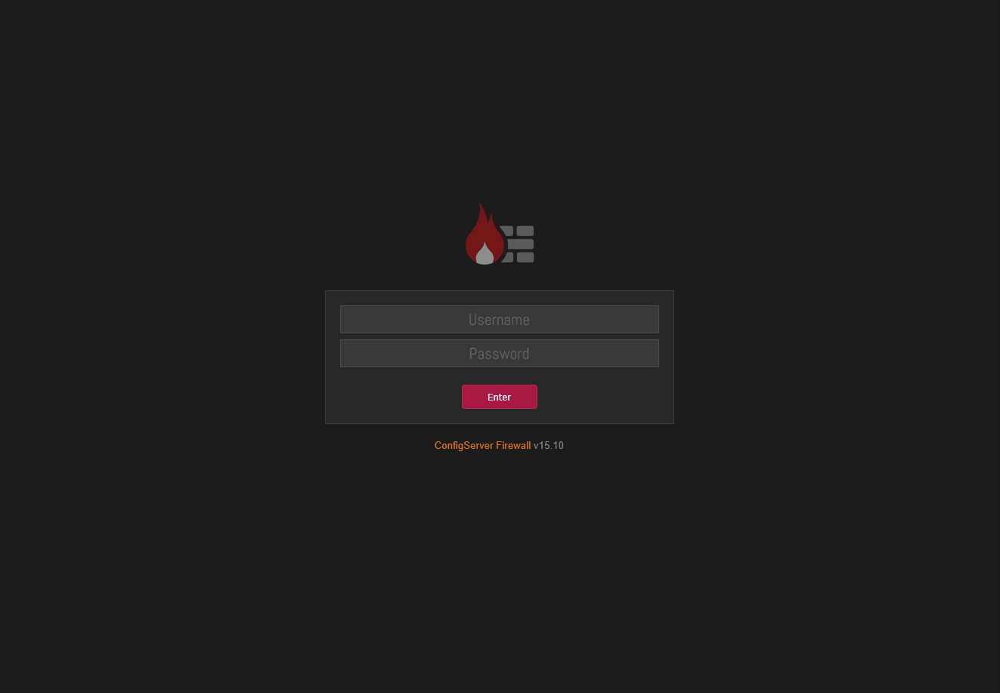
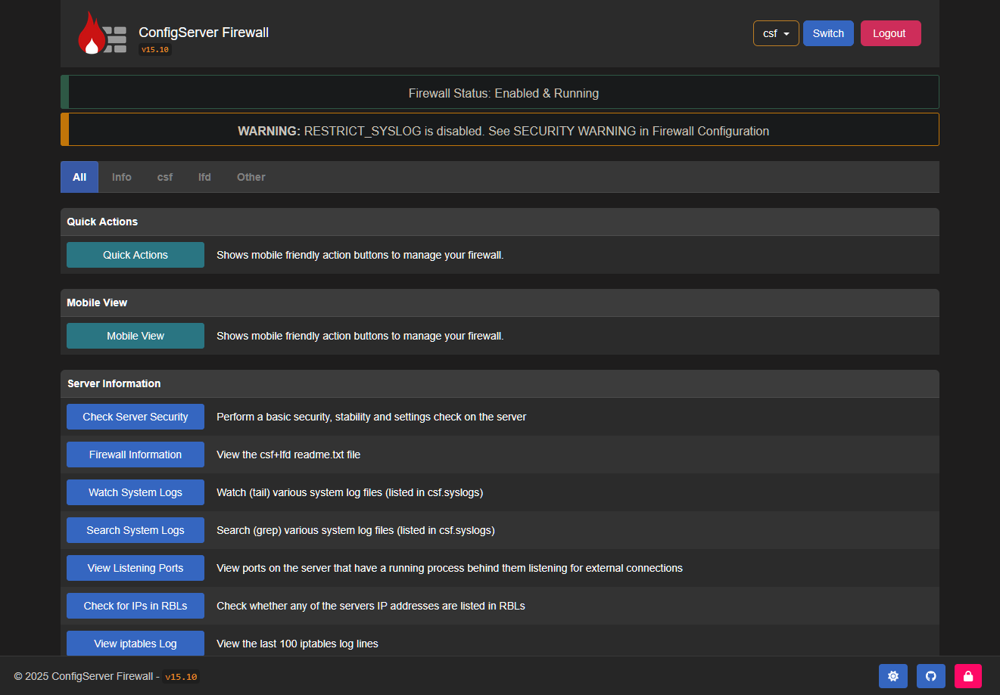

Enable Web Interface ¶
ConfigServer Firewall provides an optional web-based interface that lets you manage CSF from your browser. With it, you can configure settings, and blacklist or whitelist IPs without using commands or editing configuration files manually. If you choose not to enable the interface, all management must be done directly through the CSF config files, or by running commands through your shell.
Setup¶
This section covers the initial setup of the CSF web interface with only the essential requirements. Follow these steps to get the web interface up and running quickly.
Step 1: Install Perl Modules¶
To get the CSF web interface functioning on your server, you must first ensure that you have a few perl modules installed. If you followed our dependencies guide, you should already have these dependencies satisfied. If you have not yet installed them, run one of the following commands in your server's terminal:
apt-get update
apt-get install -y perl \
libio-socket-ssl-perl \
libwww-perl \
libjson-perl \
libnet-ssleay-perl \
libcrypt-ssleay-perl \
liblwp-protocol-https-perl \
libgd-graph-perl \
libio-socket-inet6-perl \
libsocket6-perl \
libnet-libidn-perl \
libtime-hires-perl \
sendmail-bin \
dnsutils \
unzip \
wget
yum install -y perl \
perl-libwww-perl \
perl-IO-Socket-SSL.noarch \
perl-JSON \
perl-Net-SSLeay \
perl-Net-LibIDN \
perl-Crypt-SSLeay \
perl-LWP-Protocol-https.noarch \
perl-GDGraph \
perl-Math-BigInt \
perl-Time-HiRes \
perl-Socket \
perl-Socket6 \
perl-IO-Socket-Inet6 \
wget \
unzip \
net-tools \
ipset \
bind-utils
Step 2: Enable Web UI¶
To enable CSF web interface, edit the file /etc/csf/csf.conf in your favorite text editor:
We need to update the following values. Click to see information about each setting.
# #
# 1 to enable, 0 to disable web ui
# #
UI = "1" # (1)!
# #
# Set port for web UI. The default port is 6666, but
# I change this to 1025 to easy access. Default port create some issue
# with popular chrome and firefox browser (in my case)
# #
UI_PORT = "1025" # (2)!
# #
# Leave blank to bind to all IP addresses on the server
# #
UI_IP = "" # (3)!
# #
# Set username for authetnication
# #
UI_USER = "admin" # (4)!
# #
# Set a strong password for authetnication
# #
UI_PASS = "admin" # (5)!
- Defines if the CSF web interface is enabled or not. Will be
accessible via your web browser.
RequiredValues:
0,1 - Defines the port to assign for the CSF web interface.
This should be set to a value of
1023or higher.RequiredValues:> 1023 - Defines the IP address to bind to the CSF web interface.
If you plan to route this through Traefik, you should set this to your docker subnet such as
::ffff:172.17.0.1.Leave blank if you want to bind to all IP addresses on server.RequiredValues:blank,::IPv6:IPv4 - Defines the username that will be required in order to
sign into the CSF web interface. This should be alphabetic or numerical characters.
RequiredValues:
A-Z,a-z,0-9 - Defines the password that will be required in order to
sign into the CSF web interface. This should alphabetic, numerical, or special characters.
Required
A-Z,a-z,0-9
Once you have edited the file, save and exit. Next, open the file /etc/csf/ui/ui.allow and add your public IP to allow access to the CSF web interface. Ensure you only add one IP address per line:
The CSF web interface works under the lfd daemon _LFD_. We need to restart the LFD on your system using the following command:
In order to gain access to the online admin panel; you must ensure LFD and CSF are running. You can check by running the commands:
You should see the following:
● lfd.service - ConfigServer Firewall & Security - lfd
Loaded: loaded (/lib/systemd/system/lfd.service; enabled; preset: enabled)
Active: active (running) since Mon 2025-19-21 11:59:38 UTC; 1s ago
Process: 46393 ExecStart=/usr/sbin/lfd (code=exited, status=0/SUCCESS)
Main PID: 46407 (lfd - sleeping)
Tasks: 8 (limit: 4613)
Memory: 121.7M
CPU: 2.180s
CGroup: /system.slice/lfd.service
Next, confirm CSF service is also running:
Check the output for any errors; which there should be none.
● csf.service - ConfigServer Firewall & Security - csf
Loaded: loaded (/lib/systemd/system/csf.service; enabled; preset: enabled)
Active: active (exited) since Mon 2024-08-05 12:04:09 MST; 1s ago
Process: 46916 ExecStart=/usr/sbin/csf --initup (code=exited, status=0/SUCCESS)
Main PID: 46916 (code=exited, status=0/SUCCESS)
CPU: 12.692s
If you see the following error; you must install ipset on your system:
csf[46313]: open3: exec of /sbin/ipset flush failed: No such file or directory at /usr/sbin/csf line 5650.
Alternatively, you can restart CSF and LFD at the same time by running:
Step 3: Access Web UI¶
Now, access the CSF interface in your browser with the specified port. For this tutorial; we used 1025 port and accessed the CSF admin panel by opening our browser and going to:
Default Username & Password
If you did not change the default username and password in /etc/csf/csf.conf, you will get an error about the default credentials not being changed. You need to go back to the /etc/csf/csf.conf
set UI_USER and UI_PASS
{kind=link}

After successful login, you will find the screen like below.
{kind=link}

We will cover how to actually use the CSF web interface in another section. As of right now you should at least be able to access the web interface by going to http://127.0.0.1:1025 in your browser. Or whatever IP and port you assigned within the /etc/csf/csf.conf.
Traefik Integration¶
This section of the guide explains how to set up CSF along with Traefik reverse proxy integration.
Domain Name¶
Before you begin, you’ll need to decide how you want to access Traefik and CSF from your browser. There are three main options:
-
Use the server’s IP address
Access services directly by memorizing and entering their IP addresses. -
Purchase a valid domain name
Register a real TLD (e.g.,.com,.org,.net,.io) for public access. -
Use a local domain
Configure a.localor.landomain for internal access only.
⚠️ These domains cannot be reached from outside your local network.
The main reason for choosing how you will access Traefik will determine how you generate the correct SSL certificate. SSL certificates allow you to securely access Traefik and the CSF web interface over the https protocol. Without a valid certificate, you would be limited to using the insecure http protocol.
We will outline the differences in the options below:
Purchase Domain¶
This option involves you buying your own TLD / domain name from a valid domain regisrar online.
How To Obtain¶
If you plan to go the route of purchasing a valid TLD / domain, you can find a relatively cheap domain through registrars online. We've listed a few recommendations, but you can pick whichever company you want to go with:
Our Recommendation
We make no money from this recommendation, and there is no affiliate link included.
That said, we personally recommend Porkbun as a reliable domain registrar. They offer competitive pricing and include free WHOIS privacy with any domain purchase.
We have interacted with their support in the past and have been impressed with their professionalism. Of course, you are free to choose whichever registrar you prefer. We only recommend them because we have been an actual customer for over six years, and have never had a negative experience.
Plus, the comedy on their website is fun to read.
Once you get your domain purchased, you'll need to set up the domain name to point to your server. You could also decide to set up your domain name to run through Cloudflare (optional).
SSL Certificate¶
Generating an SSL certificate for a purchased domain is extremely simple, and you have a few options:
- You can create a Cloudflare account, link your domain with Cloudflare, and get a free SSL certificate
- Your domain name may include a free 1-year SSL certificate
- When you set up your domain to run with Traefik, there are settings which allow you to have Traefik automatically generate an SSL certificate free of charge.
Setup¶
After you have purchased a valid TLD, you will need to associate that domain with the IP address or nameservers that are assigned to your server where Traefik and CSF will be hosted. There are a multitude of tutorials online about configuring your domain, so we won't go into great detail. The process however, is simple.
We do recommend setting your domain up with Cloudflare. This allows you to configure your domain name with your server, and also receive free services such as DNS management, SSL certificates, firewall rules, and DDoS protection. No extra cost.
Local Domain¶
This option allows you to use a free local domain such as .lan or .local to generate a self-signed certificate and access services such as CSF and Traefik, however, on a local network only.
How To Obtain¶
If you decide not to purchase a domain, another option is to configure your server so it can be accessed through a local domain (such as .lan or .local).
.localis an officially reserved special-use domain name defined in RFC 6762.
It is typically used with Multicast DNS (mDNS) and is only accessible within your local network..lan(and similar names like.homeor.internal) are unofficial pseudo-domains.
They are commonly used for private networks but are not recognized or reserved by ICANN.
Unlike a registered domain (e.g., .com, .net, .org), a local domain:
- Will not resolve on the public internet.
- Can only be accessed within your own LAN.
- May cause conflicts if the pseudo-domain is ever assigned as a real TLD in the future.
This setup works well if you only need access to CSF and Traefik on your internal network. However, if you need external access from an outside network, you’ll need to purchase a domain.
SSL Certificate¶
Obtaining an SSL certificate for a local domain involves more work. You have the following options:
- Self-generate your own SSL certificate using an app such as OpenSSL
- Find an SSL Certificate authority which allows you to generate certificates for a public IP address.
- Let's Encrypt announced that IP based SSL certificates would be available in Q4 of 2025
- Use an online self-signed certificate generator instead of OpenSSL.
- Traefik also provides quick documentation on how to generate your own self-signed certificate; follow that tutorial here
Setup¶
If you have decide to go with a .local or .lan self-hosted domain, you will need to tell your network / computers what domain you want to use, and where the domain / subdomains should go when you type it into your browser.
To configure local domain access, you’ll need to edit your operating system’s hosts file. This ensures that when you type a local domain into your browser, your computer redirects it to the IP address of your Traefik Docker container.
Before you can do this, make sure Traefik is installed and running so you know which IP address has been assigned to the container. Once you have the container’s IP, open your OS hosts file and create entries like the following examples. For ours, Traefik is assigned the docker ip 172.18.0.2:
The host file changes above means that any time you go to myserver.local in your browser, the local domain will automatically try to establish a connection with your Traefik container via the IP 172.18.0.2.
Setup Traefik¶
Now that we have all of the domain information out of the way, we can now install Traefik Reverse Proxy on your server. Traefik allows you to install their software on a few different platforms:
We are not going to provide detailed instructions on installing Traefik since that is outside the scope of this documentation, but there are many tutorials online, and we have linked several above next to each installation option.
If you opted to use a local domain that you did not purchase, you will need to generate a self-signed certificate and install it in Traefik. This allows you to access your server securely over https rather than the insecure http protocol.
For guidance on generating a self-signed SSL certificate, refer to Traefik’s documentation creating a self-signed certificate.
Setup Traefik with CSF¶
By this point in the guide, you should have:
- A registered domain or a local/LAN domain name
- A Let's Encrypt or self-signed SSL certificate
- A running installation of Traefik Reverse Proxy
- An installed copy of ConfigServer Firewall & Security (CSF)
Next, we’ll configure CSF so it can be accessed through Traefik.
Open /etc/csf/csf.conf and update the UI_IP setting. This defines the IP address that the CSF web interface will bind to. By default, the value is empty, which means CSF’s web interface binds to all IPs on the server.
When setting UI_IP, we will use the IP address of our docker network, which is formatted as ::ffff:172.17.0.1. This is an IPv6-mapped IPv4 address which consists of:
| Value | Description |
|---|---|
:: |
shorthand for “all zeros” in IPv6. |
ffff: |
a marker that indicates the address is an IPv4-mapped address |
172.17.0.1 |
the actual IPv4 address being represented (in this case, the Docker bridge gateway) |
In short, ::ffff:172.17.0.1 is just another way of writing the IPv4 address 172.17.0.1, but inside the IPv6 address space.
The above change will ensure that your CSF web interface is not accessible via your public IP address. We're going to allow access to it through our docker network and domain name.
Next, we need to edit the Traefik config files to add a few things:
- Middleware
- Routers
- Entrypoints
- Services
We will also define Middleware, which adds an extra layer of security to the CSF web interface. Users must pass through this middleware before they can successfully access the CSf web interface.
What Is Middleware?
Middleware allow you to adjust or filter requests before they reach your service, or to modify responses before they are sent back to the client.
Traefik provides a wide range of middleware: some modify requests or headers, others handle redirections, add authentication, apply access controls, and more.
Adding middleware for Traefik is completely optional. The middleware listed below offer additional security to help ensure that nobody can access your CSF web interface.
authentik:middleware requires that you have Authentik installed on your server. If you do not wish to use this app for authentication, you can skip implementing this.geoblock:middleware requires that you install the Traefik plugin Geoblock before it will function properly.whitelist:middleware is built into Traefik and does not require any additional plugins. It works out-of-the-box.
Full Traefik documentation for middleware can be found here.
In the two code block tabs below, we give the code that you should add to two important Traefik config files:
dynamic.yml: Traefik's dynamic configuration filetraefik.yml: Traefik's static configuration file
The code contained within this codeblock should go inside your Traefik dynamic file, usually named dynamic.yml.
# #
# Protocol › http
# #
http:
# #
# http › Middleware
# #
middlewares:
# #
# Middleware › Http redirect
# Redirect http to https
# #
https-redirect:
redirectScheme:
scheme: "https"
permanent: true
# #
# Middleware › Authentik
# #
authentik:
forwardauth:
address: http://authentik-server:9000/outpost.goauthentik.io/auth/traefik
trustForwardHeader: true
authResponseHeaders:
- X-authentik-username
- X-authentik-groups
- X-authentik-email
- X-authentik-name
- X-authentik-uid
- X-authentik-jwt
- X-authentik-meta-jwks
- X-authentik-meta-outpost
- X-authentik-meta-provider
- X-authentik-meta-app
- X-authentik-meta-version
# #
# Middleware › Geoblock
# #
geoblock:
plugin:
GeoBlock:
allowLocalRequests: "true"
allowUnknownCountries: "false"
blackListMode: "false"
api: https://get.geojs.io/v1/ip/country/{ip}
ipGeolocationHttpHeaderField: "Cf-Ipcountry"
xForwardedFor: "X-Forwarded-For"
apiTimeoutMs: "150"
cacheSize: "15"
addCountryHeader: "true"
forceMonthlyUpdate: "true"
logAllowedRequests: "true"
logApiRequests: "true"
logLocalRequests: "true"
silentStartUp: "false"
unknownCountryApiResponse: nil
countries:
- US
# #
# Middleware › IP White/Allow List
# #
whitelist:
ipAllowList:
sourceRange:
- "127.0.0.0/8"
ipStrategy:
excludedIPs:
# Cloudflare IP List
# These will be ignored and the next IP in line will be checked
- 173.245.48.0/20
- 103.21.244.0/22
- 103.22.200.0/22
- 103.31.4.0/22
- 141.101.64.0/18
- 108.162.192.0/18
- 190.93.240.0/20
- 188.114.96.0/20
- 197.234.240.0/22
- 198.41.128.0/17
- 162.158.0.0/15
- 104.16.0.0/13
- 104.24.0.0/14
- 172.64.0.0/13
- 131.0.72.0/22
- 2400:cb00::/32
- 2606:4700::/32
- 2803:f800::/32
- 2405:b500::/32
- 2405:8100::/32
- 2a06:98c0::/29
- 2c0f:f248::/32
# #
# http › Routers
# #
routers:
csf-http:
service: "csf"
rule: "Host(`csf.domain.com`)" # (1)!
entryPoints:
- "http" # (2)!
middlewares:
- https-redirect@file # (3)!
csf-https:
service: "csf"
rule: "Host(`csf.domain.com`)" # (4)!
entryPoints:
- "https" # (5)!
middlewares:
- authentik@file # (6)!
- whitelist@file # (7)!
- geoblock@file # (8)!
tls:
certResolver: cloudflare # (9)!
domains:
- main: "domain.com"
sans:
- "*.domain.com"
# #
# http › Services
# #
services:
csf:
loadBalancer:
servers:
- url: "https://172.17.0.1:1025/" # (10)!
- The
subdomain.domain.extyou will use to access the CSF web interface over the insecurehttpprotocol.
Required - Defines the Traefik entrypoint that this Docker
container will use for the insecure
httpprotocol routed throughcsf-http.This entrypoint is defined in the Traefiktraefik.ymlstatic file.Required - This middleware ensures that any connections made over
the insecure
httpprotocol to the routercsf-httpare automatically redirected to the securehttps(SSL) protocol routercsf-https.This middleware is defined in the Traefikdynamic.ymldynamic file.Required - The
subdomain.domain.extyou will use to access the CSF web interface over the securehttpsprotocol.
Required - Defines the Traefik entrypoint that this Docker
container will use for the secure
httpsprotocol.This entrypoint is defined in the Traefiktraefik.ymlstatic file.Required - Specifies the middleware
Authentikwhen a user attempts to access the CSF web interface over the securehttpsprotocol.
With this middleware, the user must authenticate throughAuthentikbefore proceeding and gaining access to the web interface.This middleware is defined in the Traefikdynamic.ymldynamic file.Optional - Specifies the middleware
IP Whitelistwhen a user attempts to access the CSF web interface over the securehttpsprotocol.
With this middleware, only users connecting from whitelisted IP addresses are allowed to access the web interface.This middleware is defined in the Traefikdynamic.ymldynamic file.Optional - Specifies the middleware
Geo-blockwhen a user attempts to access the CSF web interface over the securehttpsprotocol.
With this middleware, users from blacklisted geographical locations are denied access to the web interface.This middleware is defined in the Traefikdynamic.ymldynamic file.Optional - If you purchased a domain name, you can configure which
certificate resolver you generate SSL certificate from.
Optional
- This line defines the Traefik
service/loadbalancerrules.ipis the IP address assigned to your Traefik container through your Docker network. In our example, Traefik is assigned to172.17.0.1. You can also use the Traefik container name instead of the IP.portshould be set to the port assigned to the ConfigServer Firewall web interface. This is defined by theUI_PORTsetting in/etc/csf/csf.conf. In our example, we use1025.Required
After adding the above lines to your Traefik dynamic.yml, you will also need to update the Traefik static configuration file, usually named traefik.yml.
The static file defines key settings such as the file provider, the entrypoints used to access your web service, and any plugins that Traefik should load.
The code contained within this codeblock should go inside your Traefik static file, usually named traefik.yml.
# #
# Global
# #
global:
checkNewVersion: false
sendAnonymousUsage: false
# #
# Logs
#
# filePath must match volume mounted in docker-compose.yml
# #
log:
level: DEBUG
format: "common"
# #
# Access Logs
#
# filePath must match volume mounted in docker-compose.yml
# #
accessLog:
filePath: "/var/log/traefik/access.log"
# #
# Api
# #
api:
dashboard: true
insecure: true
debug: true
# #
# Entry Points
# #
entryPoints:
# #
# Port › HTTP
#
# *trustedIps : List of Cloudflare Trusted IP's above for HTTPS requests
# #
http:
address: :80
forwardedHeaders:
trustedIPs: &trustedIps
# Cloudlare Public IP List > Start > for HTTP requests, remove this if you don't use it; https://cloudflare.com/de-de/ips/
- 103.21.244.0/22
- 103.22.200.0/22
- 103.31.4.0/22
- 104.16.0.0/13
- 104.24.0.0/14
- 108.162.192.0/18
- 131.0.72.0/22
- 141.101.64.0/18
- 162.158.0.0/15
- 172.64.0.0/13
- 173.245.48.0/20
- 188.114.96.0/20
- 190.93.240.0/20
- 197.234.240.0/22
- 198.41.128.0/17
- 2400:cb00::/32
- 2606:4700::/32
- 2803:f800::/32
- 2405:b500::/32
- 2405:8100::/32
- 2a06:98c0::/29
- 2c0f:f248::/32
http:
redirections:
entryPoint:
to: https
scheme: https
# #
# Port › HTTPS
#
# *trustedIps : List of Cloudflare Trusted IP's above for HTTPS requests
# #
https:
address: :443
http3: {}
forwardedHeaders:
trustedIPs: *trustedIps
transport:
keepAliveMaxRequests: 0
keepAliveMaxTime: 0s
lifeCycle:
requestAcceptGraceTimeout: 0
graceTimeOut: 120s
respondingTimeouts:
readTimeout: 0
writeTimeout: 0
idleTimeout: 0
# #
# Plugins
# #
experimental:
plugins:
GeoBlock:
moduleName: "github.com/PascalMinder/geoblock"
version: "v0.2.8"
# #
# Providers
#
# file:
# filename: must match volume mounted in docker-compose.yml
#
# docker:
# exposedByDefault = true
# all docker-compose.yml files will automatically create a new traefik provider.
#
# this means if you are using file provider in dynamic file, each container
# will show up twice. x1 @docker and x1 @file
#
# if exposedByDefault = false, you must manually add `trafik.enable=true` to each container in the docker-compose.yml
# #
providers:
docker:
endpoint: "unix:///var/run/docker.sock"
exposedByDefault: false
network: traefik
watch: true
file:
filename: "/etc/traefik/dynamic.yml"
watch: true
In the code blocks above, we attached multiple Traefik middlewares to routers:
- Authentik Middleware
- Require authentication through Authentik before allowing access.
- IP AllowList
- Restrict access to the CSF web interface by whitelisted IP addresses.
- Geoblocking
- Restrict access based on Geographical location
Restart Traefik¶
Once you configure these changes in Traefik, you can restart your Traefik docker container. The command for that depends on how you set up the container. If you used docker-compose.yml, you can cd into the folder with the docker-compose.yml file and then execute: